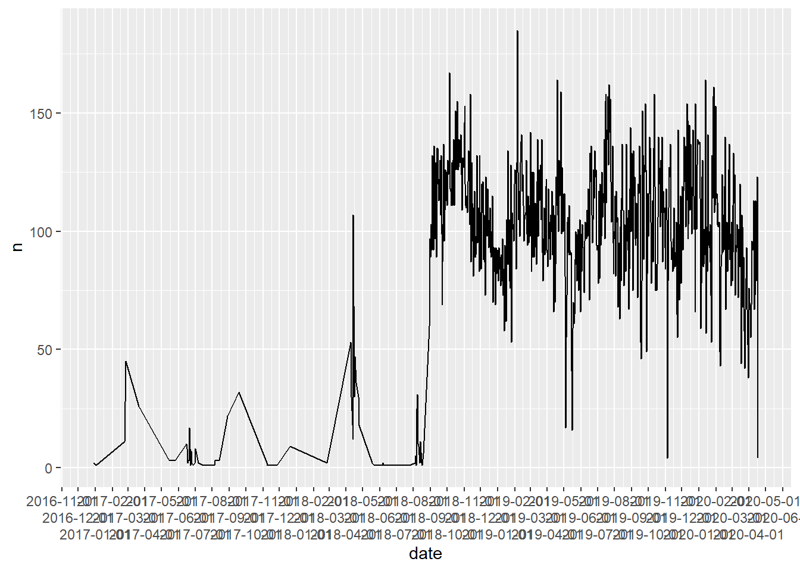
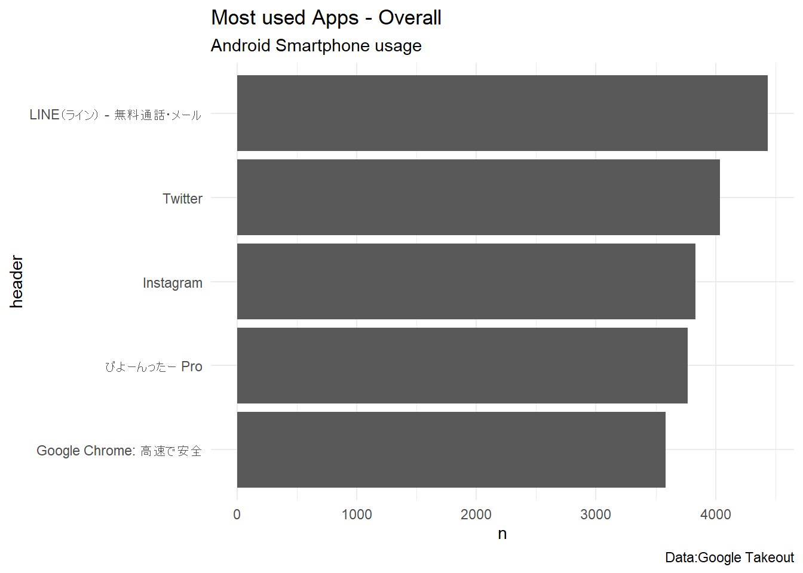
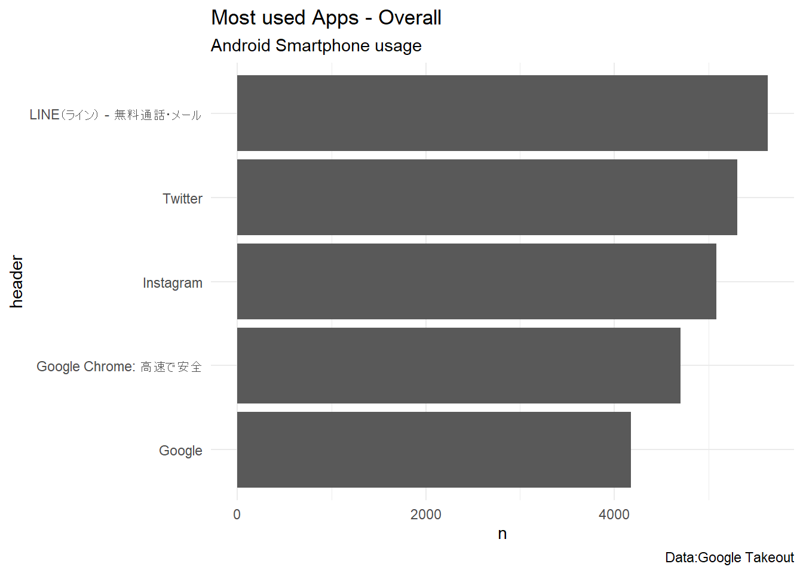
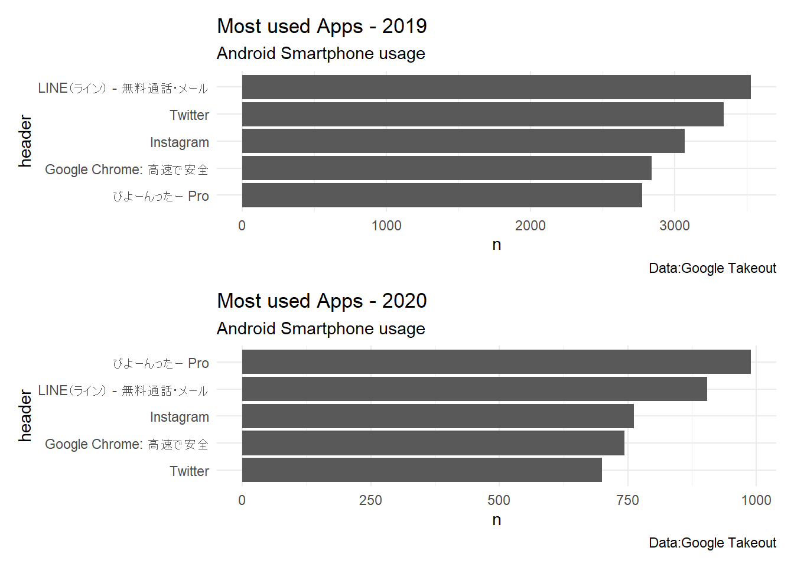

Chapter: 1 android分析
1.1 ライブラリの準備
pacman::p_loadを使うと、ライブラリをまとめて読み込んでくれます。また、インストールされていないライブラリがある場合は、インストールかつ読み込みを行ってくれます。 pacmanがインストールされていない場合は、コメントアウトしてインストールしてください。
1.2 activityをダウンロード
あとで書く google takeout で検索
1.3 ここから解析
1.3.1 activityの読み込み
1.3.2 読み込んだactivityデータの概要確認
## Rows: 63,120
## Columns: 5
## $ header [3m[38;5;246m<chr>[39m[23m "びよーんったー Pro", "Nova Launcher ホーム", "Gmail", "Sla...
## $ title [3m[38;5;246m<chr>[39m[23m "使用: びよーんったー Pro", "使用: Nova Launcher ホーム", "使用: ...
## $ titleUrl [3m[38;5;246m<chr>[39m[23m "https://play.google.com/store/apps/details?id=co...
## $ time [3m[38;5;246m<chr>[39m[23m "2020-04-16T21:29:57.048Z", "2020-04-16T21:29:54....
## $ products [3m[38;5;246m<list>[39m[23m ["Android", "Android", "Android", "Android", "An...1.3.3 timeデータを変換
1.3.4 年月ごとのデータ数の集計
2018年8月以前のデータが少ない。 activityデータの収集がうまくいっていなかった？
## # A tibble: 37 x 3
## # Groups: year, month(date) [37]
## year `month(date)` n
## <dbl> <dbl> <int>
## 1 2016 12 2
## 2 2017 1 1
## 3 2017 2 56
## 4 2017 3 26
## 5 2017 5 6
## 6 2017 6 64
## 7 2017 7 12
## 8 2017 8 29
## 9 2017 9 32
## 10 2017 11 4
## # ... with 27 more rowsandroid %>%
count(date) %>%
ggplot() + geom_line(aes(date,n)) +
scale_x_date(breaks = "month",
guide = guide_axis(n.dodge = 3))
1.3.5 データの準備
2019年と2020年のデータのみを使うことにする。
アプリの名前が長いから20文字までにする。
1.3.6 アプリの使用回数（2019-2020）
android_latest %>%
count(header, sort = TRUE) %>%
head(5) %>%
mutate(header = fct_reorder(header, n)) %>%
ggplot() + geom_col(aes(y = header, x = n)) +
theme_minimal() +
labs(title = "Most used Apps - Overall",
subtitle = "Android Smartphone usage",
caption = "Data:Google Takeout")
1.3.7 アプリの使用回数（すべての年）
android %>%
count(header, sort = TRUE) %>%
head(5) %>%
mutate(header = fct_reorder(header, n)) %>%
ggplot() + geom_col(aes(y = header, x = n)) +
theme_minimal() +
labs(title = "Most used Apps - Overall",
subtitle = "Android Smartphone usage",
caption = "Data:Google Takeout")
1.3.8 比較（2019 vs 2020）
android_latest %>%
filter(year %in% '2019') %>%
group_by(year, header) %>%
summarise(n = n()) %>%
arrange(desc(n)) %>%
head(5) %>% #View()
mutate(header = fct_reorder(header, n)) %>%
ggplot() + geom_col(aes(y = header, x = n)) +
# facet_wrap(~year, scales = "free") +
theme_minimal() +
labs(title = "Most used Apps - 2019",
subtitle = "Android Smartphone usage",
caption = "Data:Google Takeout") -> p2019
android_latest %>%
filter(year %in% '2020') %>%
group_by(year, header) %>%
summarise(n = n()) %>%
arrange(desc(n)) %>%
head(5) %>% #View()
mutate(header = fct_reorder(header, n)) %>%
ggplot() + geom_col(aes(y = header, x = n)) +
# facet_wrap(~year, scales = "free") +
theme_minimal() +
labs(title = "Most used Apps - 2020",
subtitle = "Android Smartphone usage",
caption = "Data:Google Takeout") -> p2020
p2019 / p2020